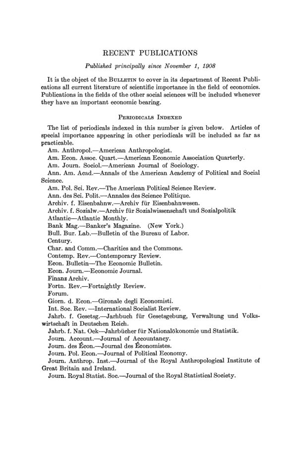

O Bulletin de abril de 1909: 142 teses, ferrovias e moeda
Leitura: 4 min
Notas sobre a reunião de Atlantic City e a comissão monetária, a sexta lista de teses em andamento, com 142 nomes, 31 resenhas com peso para transportes e contabilidade, e a bibliografia corrente.


O número de abril de 1909 abre com a reunião anual de Atlantic City, feita junto com outras três sociedades. Ali se decidiu comemorar os 25 anos da associação em Nova York, em dezembro de 1909, com uma comissão presidida por Seligman. Davis R. Dewey, do MIT, foi indicado presidente. T. N. Carver, de Harvard, assumiu a secretaria e a tesouraria e levou o escritório para Cambridge.
O que contavam as notas?
A nota mais longa é sobre a comissão monetária nacional. O senador Nelson W. Aldrich, H. P. Davidson e A. Piatt Andrew voltaram de três meses de investigação sobre os bancos europeus. Outras notas registram o inquérito de Ernest Aves sobre salários e custo de vida americanos para o Board of Trade britânico e o depoimento de Taussig sobre a revisão da tarifa.
Há quatro registros de morte, entre eles o de Joseph Wharton, fundador da Wharton School. Max West, do Bureau of Corporations, autor de The Inheritance Tax, morreu de pneumonia em 7 de janeiro de 1909.
Quem fazia doutorado em economia?
A sexta lista de teses em andamento, datada de 1º de janeiro de 1909, foi compilada a partir de uma circular a todas as instituições representadas no conselho da associação. Cada entrada traz nome, formação, tema e data provável de conclusão. Pela minha contagem, são 142 nomes em 12 instituições, com Columbia à frente.
Sindicatos, imigração, tributação estadual e local e monografias de indústria, do vidro ao carvão antracito, ocupam a maior parte da lista. Aparecem nomes que o leitor reencontrará: John Maurice Clark, em Columbia, com a teoria das tarifas ferroviárias; Abbott Payson Usher, em Harvard, com as leis francesas de cereais; Warren Milton Persons, em Wisconsin, com método estatístico.
Que livros foram resenhados?
São 31 resenhas, uma delas sobre dois livros de colonização. Transportes dominam: a história congressual das ferrovias de Lewis H. Haney, o relatório da Interstate Commerce Commission sobre as relações entre companhias ferroviárias, três livros resenhados por Frank Haigh Dixon e o de Edwin A. Pratt sobre nacionalização. Frederick A. Cleveland resenha quatro livros de títulos, finanças corporativas e contabilidade.
Sobre o Congresso e as ferrovias até 1850, resume Bogart: “Discussão houve bastante; ação, muito pouca.” (Of discussion there was plenty; but of action, very little.)
O relatório da comissão mostra como as participações acionárias concentravam o controle. No sistema da Atlantic Coast Line, ações no valor de US$ 5 milhões davam à companhia controladora o comando de US$ 725 milhões de capitalização.
Moeda e finanças públicas aparecem com a terceira edição de Money and Banking, de Horace White, que trata do pânico de 1907 e do banco central, com The Story of Gold, de Edward Sherwood Meade. Há ainda estatística social, legislação fabril, o seguro industrial de Charles Richmond Henderson, sociologia e um estudo de A. J. Sargent sobre o comércio anglo-chinês.
No capítulo sobre ouro e prosperidade, Meade afirma: “A conexão entre a oferta de ouro e a prosperidade é hoje plenamente compreendida.” (The connection between the gold supply and prosperity is now thoroughly understood)
Como se organizava a bibliografia?
A seção Recent Publications cobre obras publicadas principalmente desde 1º de novembro de 1908. Abre com a lista de periódicos indexados e segue em 18 seções numeradas, com livros e artigos separados.
Na minha leitura
Na minha leitura, o número de abril de 1909 mostra a economia americana montando sua infraestrutura de dados. A comissão monetária encomenda monografias e estatísticas sobre bancos estrangeiros antes de propor reforma; a Interstate Commerce Commission levanta, companhia por companhia, quem controla quem nas ferrovias; a lista de teses mostra uma geração dedicada a monografias. A tese de Meade, que liga diretamente ouro e prosperidade, representa o outro caminho: a explicação geral que antecede o levantamento.
Glossário
- Holding
- empresa que existe para deter ações de outras e, por meio delas, controlar sua gestão.
- National Monetary Commission
- comissão do Congresso americano criada após o pânico de 1907 para estudar a reforma bancária e monetária.
- Fundo de amortização
- reserva destinada a pagar gradualmente uma dívida; em inglês, sinking fund.
Artigos desta edição
- Personal and Miscellaneous Notes — editores (pp. 1–15). Notas sobre a reunião anual de Atlantic City, a indicação de Davis R. Dewey para presidente, a comissão monetária nacional, nomeações e os obituários de Joseph Wharton, Henry Chapman Watson, Max West e Karl Theodor Inama-Sternegg. JSTOR
- Sixth List of Doctoral Dissertations in Political Economy in Progress in American Universities and Colleges, January 1, 1909 — compilada pelo Economic Bulletin (pp. 16–23). Lista por instituição, com nome, formação, tema e data provável de conclusão de cada candidato; pela minha contagem, 142 nomes em 12 instituições. JSTOR
- Scott Nearing e Frank D. Watson, Economics — T. N. Carver (pp. 24–25). Manual introdutório que parte da prosperidade e passa por consumo, recursos naturais, trabalho, capital, organização empresarial, monopólios municipais, distribuição e programas econômicos. JSTOR
- Norris A. Brisco, The Economic Policy of Robert Walpole — Raymond V. Phelan (pp. 25–27). História da política econômica inglesa no tempo de Walpole: política fiscal, reformas tributária e tarifária, política colonial e industrial e comércio exterior. JSTOR
- Bertha Haven Putnam, The Enforcement of the Statutes of Labourers, in Decade 1349-59 — Raymond V. Phelan (pp. 27–30). Estudo da aplicação das leis que fixaram salários e preços depois da Peste Negra, baseado em manuscritos do Public Record Office, com 463 páginas de documentos, listas e tabelas. JSTOR
- Lewis H. Haney, A Congressional History of Railways in the United States, vol. I — Ernest L. Bogart (pp. 30–32). Primeiro de três volumes sobre o Congresso e as ferrovias, até 1850, dividido em três livros: a questão ferroviária, o auxílio às ferrovias e as ferrovias para o Pacífico. JSTOR
- Peter Tracy Dondlinger, The Book of Wheat — J. I. Schulte (pp. 32–33). História econômica e manual da triticultura nos Estados Unidos, do cultivo ao transporte, armazenagem, comercialização e preços, em dezessete capítulos. JSTOR
- Montague Fordham, Mother Earth: A Proposal for the Permanent Reconstruction of Our Country Life — James B. Morman (pp. 33–35). Plano para reconstruir a agricultura e a vida rural inglesas com acesso à terra e ao capital, regulação estatal dos mercados e salário mínimo legal para trabalhadores agrícolas. JSTOR
- Interstate Commerce Commission, Intercorporate Relationships of Railways in the United States as of June 30, 1906 — Frank L. McVey (pp. 35–38). Relatório especial sobre o controle de ferrovias por meio de participações acionárias, com quatro tabelas de títulos e exemplos de sistemas como Rock Island, Atlantic Coast Line e Reading. JSTOR
- A. Barton Hepburn, Artificial Waterways and Commercial Development — Frank Haigh Dixon (pp. 38–39). Livro dedicado sobretudo à história e à situação do canal Erie, em defesa de sua reconstrução para preservar a primazia comercial de Nova York. JSTOR
- John Howe Peyton, The American Transportation Problem — Frank Haigh Dixon (pp. 39–40). Estudo de um engenheiro civil contra os projetos de melhoria das hidrovias interiores, com análises de engenharia, custos e demanda de tráfego. JSTOR
- H. Marriott, The Fixing of Rates and Fares — Frank Haigh Dixon (pp. 40). Conferências na Universidade de Manchester sobre classificação e tarifas de carga e de passageiros nas ferrovias inglesas, com introdução de S. J. Chapman. JSTOR
- Edwin A. Pratt, Railways and Nationalization — Victor S. Clark (pp. 40–41). Argumento contra a nacionalização das ferrovias britânicas, com revisão descritiva e estatística da operação estatal e privada em vários países. JSTOR
- Albert Galloway Keller, Colonization: A Study of the Founding of New Societies; Henry C. Morris, The History of Colonization — James A. LeRoy (pp. 41–44). Resenha conjunta de um estudo sociológico da colonização, com capítulos sobre a colonização portuguesa, espanhola, holandesa e alemã, e de uma história geral da colonização reimpressa em 1908. JSTOR
- Frederick Lownhaupt, Investment Bonds: Their Issue and Their Place in Finance — Frederick A. Cleveland (pp. 44–45). Classificação e descrição dos títulos de investimento: emissão, negociação, atributos legais e relações financeiras. JSTOR
- William H. Forse, Jr., Electric Railway Auditing and Accounting — Frederick A. Cleveland (pp. 45–46). Guia de contabilidade e auditoria de ferrovias elétricas, das contas de construção e operação a estatísticas, reservas e fundos de amortização. JSTOR
- Harry C. Bentley, Corporation Finance and Accounting — Frederick A. Cleveland (pp. 46–47). Obra em seis partes sobre o tesoureiro da empresa, contabilidade, finanças corporativas, títulos negociáveis, valores mobiliários e formulários, com notas jurídicas de Thomas Conyngton. JSTOR
- Clarence Munro Day, Accounting Practice — Frederick A. Cleveland (pp. 47). Manual de prática contábil em quatro partes: auditoria e relatório do contador, contas de caixa, formulários e modelos de relatório. JSTOR
- John Ker Towles, Factory Legislation of Rhode Island — John R. Commons (pp. 47–48). Monografia sobre a agitação e a administração das leis de trabalho infantil, jornada, inspeção fabril e estatística industrial em Rhode Island. JSTOR
- Horace White, Money and Banking Illustrated by American History, 3ª ed. — H. Parker Willis (pp. 48–49). Terceira edição, atualizada até 1908, com novos capítulos sobre o pânico de 1907 e a questão do banco central. JSTOR
- Edward Sherwood Meade, The Story of Gold — H. Parker Willis (pp. 49–50). Exame das condições da mineração moderna de ouro e previsão de aumento contínuo da produção mundial, sem depreciação marcada do metal. JSTOR
- W. M. J. Williams, The King's Revenue — Carl C. Plehn (pp. 50–51). Manual descritivo dos impostos e receitas do Reino Unido, com história, alíquota atual e arrecadação de cada fonte. JSTOR
- N. Reichesberg, Soziale Gesetzgebung und Statistik — William B. Bailey (pp. 51–53). Estudo sobre a relação entre legislação social e estatística na Suíça, com proposta de que a confederação centralize a estatística social. JSTOR
- John Benjamin Nichols, The Numerical Proportion of the Sexes at Birth — William B. Bailey (pp. 53). Estudo da proporção dos sexos ao nascer com dados de mais de 693 milhões de nascidos vivos e 13 milhões de natimortos. JSTOR
- The Mexican Year Book, 1908 — Carl C. Plehn (pp. 54–55). Anuário estatístico e descritivo do México, publicado sob os auspícios do Departamento de Finanças, com seções sobre finanças, dívida pública, bancos, transportes e recursos. JSTOR
- Charles Richmond Henderson, Industrial Insurance in the United States — John R. Commons (pp. 55–57). Panorama do seguro industrial nos Estados Unidos, de sociedades locais e sindicatos a companhias de seguro, empresas e planos ferroviários, com a legislação de outros países. JSTOR
- J. Arthur Thompson, Heredity — Charles A. Ellwood (pp. 58–59). Obra de biologia geral sobre hereditariedade, variação e caracteres adquiridos, com um capítulo final sobre as relações entre biologia e sociologia. JSTOR
- Robert De Courcy Ward, Climate: Considered Especially in Relation to Man — Charles A. Ellwood (pp. 59–60). Resumo dos princípios sobre a influência do clima na vida social e econômica, baseado em grande parte na Anthropogeographie de Ratzel. JSTOR
- Alfred Holt Stone, Studies in the American Race Problem — Ulysses G. Weatherly (pp. 60–62). Coletânea de ensaios sobre a questão racial nos Estados Unidos, com introdução e três textos de Walter F. Willcox sobre estatísticas do censo. JSTOR
- W. E. Burghardt Du Bois (ed.), Economic Cooperation among Negro Americans — Ulysses G. Weatherly (pp. 62–64). Décimo segundo volume dos Atlanta University Studies, sobre atividades econômicas e cooperativas de afro-americanos antes e depois da emancipação, de sociedades beneficentes a bancos. JSTOR
- Walter Dill Scott, The Psychology of Advertising — Fayette H. Elwell (pp. 64). Aplicação da psicologia à publicidade, com pesquisas do autor sobre leitura de anúncios em revistas e valor de atenção de espaços grandes e pequenos. JSTOR
- Arthur F. Bentley, The Process of Government: A Study of Social Pressures — Isaac A. Loos (pp. 65). Estudo que descreve o governo como resultado da pressão de interesses. JSTOR
- A. J. Sargent, Anglo-Chinese Commerce and Diplomacy — Edward D. Jones (pp. 66). História do comércio exterior chinês com ênfase na Grã-Bretanha, alternando diplomacia e comércio, da East India Company ao comércio de chá, ópio e algodão. JSTOR
- Recent Publications (pp. 67–108). Bibliografia corrente, sobretudo de obras publicadas desde 1º de novembro de 1908, precedida da lista de periódicos indexados e dividida em 18 seções temáticas numeradas, com livros e artigos. JSTOR
Fontes
- Personal and Miscellaneous Notes (pp. 1–15). JSTOR · Internet Archive (PDF)
- Sixth List of Doctoral Dissertations in Political Economy in Progress in American Universities and Colleges January 1, 1909 (pp. 16–23). JSTOR · Internet Archive (PDF)
- [untitled] The Economic Bulletin, (1909-04-01), pages 24-25 (pp. 24–25). JSTOR · Internet Archive (PDF)
- [untitled] The Economic Bulletin, (1909-04-01), pages 25-27 (pp. 25–27). JSTOR · Internet Archive (PDF)
- [untitled] The Economic Bulletin, (1909-04-01), pages 27-30 (pp. 27–30). JSTOR · Internet Archive (PDF)
- [untitled] The Economic Bulletin, (1909-04-01), pages 30-32 (pp. 30–32). JSTOR · Internet Archive (PDF)
- [untitled] The Economic Bulletin, (1909-04-01), pages 32-33 (pp. 32–33). JSTOR · Internet Archive (PDF)
- [untitled] The Economic Bulletin, (1909-04-01), pages 33-35 (pp. 33–35). JSTOR · Internet Archive (PDF)
- [untitled] The Economic Bulletin, (1909-04-01), pages 35-38 (pp. 35–38). JSTOR · Internet Archive (PDF)
- [untitled] The Economic Bulletin, (1909-04-01), pages 38-39 (pp. 38–39). JSTOR · Internet Archive (PDF)
- [untitled] The Economic Bulletin, (1909-04-01), pages 39-40 (pp. 39–40). JSTOR · Internet Archive (PDF)
- [untitled] The Economic Bulletin (1909-04-01), page 40 (pp. 40). JSTOR · Internet Archive (PDF)
- [untitled] The Economic Bulletin, (1909-04-01), pages 40-41 (pp. 40–41). JSTOR · Internet Archive (PDF)
- [untitled] The Economic Bulletin, (1909-04-01), pages 41-44 (pp. 41–44). JSTOR · Internet Archive (PDF)
- [untitled] The Economic Bulletin, (1909-04-01), pages 44-45 (pp. 44–45). JSTOR · Internet Archive (PDF)
- [untitled] The Economic Bulletin, (1909-04-01), pages 45-46 (pp. 45–46). JSTOR · Internet Archive (PDF)
- [untitled] The Economic Bulletin, (1909-04-01), pages 46-47 (pp. 46–47). JSTOR · Internet Archive (PDF)
- [untitled] The Economic Bulletin (1909-04-01), page 47 (pp. 47). JSTOR · Internet Archive (PDF)
- [untitled] The Economic Bulletin, (1909-04-01), pages 47-48 (pp. 47–48). JSTOR · Internet Archive (PDF)
- [untitled] The Economic Bulletin, (1909-04-01), pages 48-49 (pp. 48–49). JSTOR · Internet Archive (PDF)
- [untitled] The Economic Bulletin, (1909-04-01), pages 49-50 (pp. 49–50). JSTOR · Internet Archive (PDF)
- [untitled] The Economic Bulletin, (1909-04-01), pages 50-51 (pp. 50–51). JSTOR · Internet Archive (PDF)
- [untitled] The Economic Bulletin, (1909-04-01), pages 51-53 (pp. 51–53). JSTOR · Internet Archive (PDF)
- [untitled] The Economic Bulletin (1909-04-01), page 53 (pp. 53). JSTOR · Internet Archive (PDF)
- [untitled] The Economic Bulletin, (1909-04-01), pages 54-55 (pp. 54–55). JSTOR · Internet Archive (PDF)
- [untitled] The Economic Bulletin, (1909-04-01), pages 55-57 (pp. 55–57). JSTOR · Internet Archive (PDF)
- [untitled] The Economic Bulletin, (1909-04-01), pages 58-59 (pp. 58–59). JSTOR · Internet Archive (PDF)
- [untitled] The Economic Bulletin, (1909-04-01), pages 59-60 (pp. 59–60). JSTOR · Internet Archive (PDF)
- [untitled] The Economic Bulletin, (1909-04-01), pages 60-62 (pp. 60–62). JSTOR · Internet Archive (PDF)
- [untitled] The Economic Bulletin, (1909-04-01), pages 62-64 (pp. 62–64). JSTOR · Internet Archive (PDF)
- [untitled] The Economic Bulletin (1909-04-01), page 64 (pp. 64). JSTOR · Internet Archive (PDF)
- [untitled] The Economic Bulletin (1909-04-01), page 65 (pp. 65). JSTOR · Internet Archive (PDF)
- [untitled] The Economic Bulletin (1909-04-01), page 66 (pp. 66). JSTOR · Internet Archive (PDF)
- Recent Publications (pp. 67–108). JSTOR · Internet Archive (PDF)
- Sumário da edição no JSTOR: The Economic Bulletin, vol. 2, nº 1.
Documento em domínio público (EUA, publicado antes de 1931), via JSTOR Early Journal Content e Internet Archive. Resumo e comentário do autor deste site, sem afiliação com a American Economic Association. Encontrou um erro? Escreva: a correção é publicada no próprio texto, com data.
← Nº 96 · Atlantic City, 1908: sindicatos, acidentes, tarifas e o banco central Nº 98 · O manual de 1909: 1.030 sócios, caixa em queda e um déficit previsto →